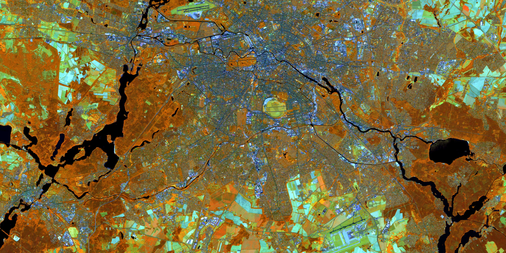
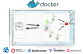
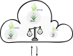

News von actinia

FOSSGIS 2023 Berlin
Vol. 2

[4.7.1] - 2023-02-09 | [4.7.0] - 2023-01-25 | [4.6.0] - 2022-12-17 | [4.5.0] - 2022-12-14 | [4.4.0] - 2022-11-22 | [4.3.1] - 2022-10-21 | [4.3.0] - 2022-09-22 | [4.2.1] - 2022-08-05 | [4.2.0] - 2022-08-03 | [4.1.0] - 2022-07-20 | [4.0.1] - 2022-05-20 | [4.0.0] - 2022-04-01 | [3.2.0] - 2022-03-23 | [3.1.3] - 2022-03-11 | [3.1.2] - 2022-02-23 | [3.1.1] - 2022-02-03
[4.0.0] - 2022-04-01
### Changed
* Refactor rest by @mmacata in #320
* Refactor rest - part 2 by @mmacata in #322
* Move apidocs by @anikaweinmann in #337
This is a major release because it breaks the actinia python API. Plugins were already adjusted accordingly. The HTTP REST API is not affected and moved (with this release completely) to [actinia-api](https://github.com/mundialis/actinia-api).
Verwandt
actinia plugins Installations-varianten
actinia clients
Installations-varianten
actinia clients
Neue Beitragende
@linakrisztian@ninsbl@Momen-Mawad
##### Keycloak Anbindung
- actinia enthält ein eigenes User Management inklusive Authentifizierung
- Identitäts- und Zugangsmanagement jetzt auch mit Keycloak möglich
- in Keycloak wird eine Client-Konfiguration mit actinia Rollen und Gruppen konfiguriert, sowie actinia spezifische Attribute
__von @anikaweinmann in [#381](https://github.com/mundialis/actinia_core/pull/381) [4.5.0]__

##### Keycloak Anbindung
- Um die Keycloak Nutzung in actinia zu konfigurieren, ist nur das Keycloak OIDC json notwendig - keine Admin Zugangsdaten
- Deshalb sind wenige Features von actinia nicht verfügbar, wenn Keycloak verwendet wird (Auflistung aller Nutzer, Erstellung und Löschung eines Nutzers)
__von @anikaweinmann in [#381](https://github.com/mundialis/actinia_core/pull/381) [4.5.0]__

##### Zwischenergebnisse speichern bei Fehler
* Bisher konnten Zwischenergebnisse nach jeden Schritt gespeichert werden
* Vorteil: Wiederaufnahme nach Fehler
* Nachteil: benötigt bei großen Datenmengen viel Speicherplatz und verlangsamt Berechnung, da die Daten nach jedem Schritt synchronisiert werden
* __Mittelweg: nur bei Fehler werden Zwischenergebnisse gespeichert__
* Auch ohne Angabe neuer Prozesskette möglich in #400 [4.6.0]
* Alternativ Manipulation der alten Prozesskette ab nach dem Fehler
* Beinhaltet TGIS (Zeitreihen) Zusammenführung in #413 [4.7.1] und Raster VRT Unterstützung in #410 [4.7.0]
* Optionales Hinzufügen zusätzlicher Mapsets in #399 [4.5.0]
__von @anikaweinmann in 413 [4.7.1], 410 [4.7.0], 400 [4.6.0], 399 [4.5.0], 390 [4.4.0]__
Aufteilung von actinia in Manager und Worker
graph TD;
manager(actinia manager)
worker(actinia worker)
redis(redis
job queue + resources);
manager --> redis;
worker --> redis;
Queue
- Nutzung einer Job Queue in redis
- Nutzung einer separaten Queue per job in #355 [4.1.0]
- Trotzdem Nutzung der lokalen Queue für synchrone Anfragen in #361 [4.2.0]
- Rückgabe des Queue Namens in der actinia Antwort in #380 [4.3.0]
Worker
- Übergabe des Queue Namens bei Job Start
- Beenden des Workers, wenn die Queue leer ist in #358 [4.2.0]
von @mmacata in 380 [4.3.0], 358 [4.2.0], 361 [4.2.0], 355 [4.1.0], 304 [3.2.0], 355 [4.1.0]
##### Umzug der GitHub Organisation

##### Projekt Board
[jetzt auf GitHub](https://github.com/orgs/mundialis/projects/1/views/5)

Weitere Neuigkeiten, Features, Verbesserungen
Resource storage older than X days deletion by @anikaweinmann in #392 [4.4.0]
Replace deprecated (Timed)JSONWebSignatureSerializer by @metzm in #386 [4.4.0] - !! Old API keys and tokens might not be valid anymore !!
Allow users to create and delete mapsets by @juleshaas and @anikaweinmann in #374 [4.2.1]
Endpoint configuration by @anikaweinmann in #357 [4.1.0]
Add more modules and configuration to add additinal modules in config by @anikaweinmann in #341 [4.0.1]
Update to GRASS GIS 8 by @neteler in [4.0.1]
Update alpine in docker by @mmacata in #343 and #346 in [4.0.1]
Refactor REST endpoints by @mmacata in #320 and #322 in [4.0.0]
Move apidocs by @anikaweinmann in #337 [4.0.0] - This is a major release because it breaks the actinia python API. Plugins were already adjusted accordingly. The HTTP REST API is not affected and moved (with this release completely) to [actinia-api](https://github.com/mundialis/actinia-api).
Importer resampling and resolution by @juleshaas in #298 [3.2.0]
More secure path mangling by @marcjansen in #281 [4.5.0]
Add pipeline to add python wheel to release assets by @mmacata in #313 [3.1.2]
Black by @anikaweinmann in #378 [4.3.0]
Qualitätsverbesserungen (Verbesserung der Tests, lint / black, Dev Setup), verbesserte Documentation, Tutorial, Release documentation
allow character "&" for t.rast.bandcalc by @metzm in #351 [4.0.1]
adapt s2 importer to work without Google BigQuery by @griembauer in #295 [3.2.0]
Plugins für die Parallelisierung:
actinia-parallel-plugin und actinia-tiling-plugin
graph LR
subgraph actinia-tiling-plugin
reg(computational region)
tile1(tile_01)
tile2(tile_02)
tile3(tile_03)
end
subgraph actinia-parallel-plugin
comp1(brightness_01)
comp2(brightness_02)
comp3(brightness_03)
end
subgraph actinia-tiling-plugin
reg(computational region)
comp(brightness)
end
reg --> tile1
reg -- tiling computational region into tiles --> tile2
reg --> tile3
tile1 --> comp1
tile2 -- computing parallel on the tiles --> comp2
tile3 --> comp3
comp1 --> comp
comp2 -- merging brightness tiles together--> comp
comp3 --> comp
- actinia-tiling-plugin erzeugt automatisiert Kacheln
- actinia-parallel-plugin prozessiert parallel auf den Kacheln
- actinia-tiling-plugin fügt die Kacheln wieder zusammen
##### Plugins für die Parallelisierung 1: Tiling
Das [actinia-tiling-plugin](https://github.com/mundialis/actinia-tiling-plugin) erzeugt Kacheln für eine Computational Region
actinia_base_url=http://localhost:8088/api/v3
mapset_url=${actinia_base_url}/locations/loc_25832/mapsets/tiling_usermapset
auth="actinia-gdi:actinia-gdi"
# create tiling grid
curl -u ${auth} -X GET ${mapset_url}/vector_layers | jq
json=grid_tiling_pb.json
curl -u ${auth} -X POST ${mapset_url}/tiling_processes/grid \
-H 'accept: application/json' -H 'Content-Type: application/json' \
-d @${json} | jq
curl -u ${auth} -X GET ${mapset_url}/vector_layers | jq
Mit `grid_tiling_pb.json`:
{
"width": "4000",
"height": "4000",
"grid_prefix": "grid"
}
##### Plugins für die Parallelisierung 2: Prozessierung
Das [actinia-parallel-plugin](https://github.com/mundialis/actinia-parallel-plugin) rechnet parallel.
Der Status von jedem einzelnen Job kann individuell abgefragt werden, oder zusammengefasst im Batch Job.
curl -u ${auth} -X POST -H 'Content-Type: application/json' \
-d @parallel_processing.json \
${actinia_base_url}/locations/nc_spm_08_grass7_root/processing_parallel | jq
Mit `parallel_processing.json`:
{
"jobs": [
{
"list": [{
"module": "g.region",
"id": "parallel_region_1",
"inputs":[{"param": "vector", "value": "tile_01@tiling_usermapset"}]
},{
"module": "r.mapcalc",
"id": "r_mapcalc_1",
"inputs":[{"param": "expression", "value": "brightness = lsat5_1987_10@landsat + lsat5_1987_20@landsat + lsat5_1987_30@landsat"}]
}],
"parallel": "true",
"version": "1"
},
{
"list": [{
"module": "g.region",
"id": "parallel_region_2",
"inputs":[{"param": "vector", "value": "tile_02@tiling_usermapset"}]
},{
"module": "r.mapcalc",
"id": "r_mapcalc_2",
"inputs":[{"param": "expression", "value": "brightness = lsat5_1987_10@landsat + lsat5_1987_20@landsat + lsat5_1987_30@landsat"}]
}],
"parallel": "true",
"version": "1"
},
{
"list": [{
"module": "g.region",
"id": "parallel_region_3",
"inputs":[{"param": "vector", "value": "tile_03@tiling_usermapset"}]
},{
"module": "r.mapcalc",
"id": "r_mapcalc_3",
"inputs":[{"param": "expression", "value": "brightness = lsat5_1987_10@landsat + lsat5_1987_20@landsat + lsat5_1987_30@landsat"}]
}],
"parallel": "true",
"version": "1"
}
]
}
##### Plugins für die Parallelisierung 3: Merging
Das [actinia-tiling-plugin](https://github.com/mundialis/actinia-tiling-plugin) fügt Vektor- und Rasterkarten in diesen Kacheln wieder zusammen
actinia_base_url=http://localhost:8088/api/v3
mapset_url=${actinia_base_url}/locations/loc_25832/mapsets/tiling_usermapset
auth="actinia-gdi:actinia-gdi"
json=patch_merge.json
curl -u ${auth} -X POST ${mapset_url}/merge_processes/patch \
-H 'accept: application/json' -H 'Content-Type: application/json' -d @${json} | jq
curl -u ${auth} -X GET ${mapset_url}/raster_layers | jq
Mit `patch_merge.json`:
{
"mapsetlist": ["tiling_usermapset_tmp1", "tiling_usermapset_tmp2", "tiling_usermapset_tmp3"],
"outputs":[
{"param": "raster", "value": "brightness"}
],
"keep_mapsets": false
}
##### Plugins für die Parallelisierung: Was fehlt noch, um die Plugins kombinieren zu können?
- actinia-parallel-plugin
- Flüchtiges (ephemeral) Prozessieren:
- Export
- Unterstützung von stdout/export für den nächsten Schritt
- Persistentes Prozessieren
- actinia-tiling-plugin
- Integration in das actinia-parallel-plugin, um automatisch Kacheln zu erzeugen und die Ergebnisse am Ende wieder zusammenzufügen
Übersicht über Komponenten und Plugins
##### actinia-stac-plugin

- Über das Plugin wird actinia selbst zu einem STAC
- Vorhandene __Collections__ können geharvested werden,
- um als __Input Datensatz für actinia gelistet__ werden zu können
- um __in Prozessierungen verwendet__ werden zu können
- Bisher wurden zwei Ressourcen implementiert:
- `/instances`: Virtueller Raum, in dem Collections gespeichert werden können. Eine Instanz ist dabei immer eine STAC Instanz, von der geharvested wird
- `/collections`: Gehören immer zu einer Instanz.
Da zwei Instanzen die gleiche Collection enthalten können, wird eine interne ID zugeordnet:
`stac.{{ stac_instance_id }}.rastercube.{{ stac_collection_id }}`
##### actinia STAC importer
Nutzung der gespeicherten Collections in Prozessketten
{
"list": [{
"id": "importer_1",
"module": "importer",
"inputs": [{
"import_descr": {
"source": "stac.defaultStac.rastercube.landsat-8-l1-c1",
"type": "stac",
"semantic_label": "B1",
"extent": {
"spatial": {
"bbox": [[30.192, -16.369, 42.834, -0.264]]
},
"temporal":{
"interval": [["2021-09-09", "2021-09-12"]]
}
},
"filter": {}
},
"param": "map",
"value": "example-red"
}
]
}],
"version": 1
}
$ curl -u $user:$pw -d @test -H 'Content-Type: application/json' \
https://actinia-dev.mundialis.de/api/v3/locations/nc_spm_08/processing_async_export
##### actinia STAC exporter
Erzeugung eines STAC Items für eine Ergebnis-Rasterkarte, Instanz gleich Nutzername
{
"list": [
{
"module": "r.slope.aspect",
...
"outputs": [
{
"param": "slope",
"value": "elevation",
"export": {
"format": "GTiff",
"type": "raster"
},
"metadata":{
"format": "STAC"
}
}
]
}
],
"version": "1"
}
actinia-module-plugin: template management
Beispiel Prozesskette
{
"list": [
{
"module": "g.region",
"id": "g.region_1",
"inputs": [
{
"param": "raster",
"value": "elevation"
},
{
"param": "res",
"value": "10"
}
],
"flags": "p"
},
{
"module": "r.slope.aspect",
"id": "r.slope.aspect_1",
"inputs": [
{
"param": "elevation",
"value": "elevation"
},
{
"param": "format",
"value": "degrees"
},
{
"param": "precision",
"value": "FCELL"
},
{
"param": "zscale",
"value": "1.0"
}
],
"outputs": [
{
"export": {
"format": "GTiff",
"type": "raster"
},
"param": "slope",
"value": "elevation_myslope"
}
],
"flags": "a"
}
],
"version": "1"
}
Prozessketten-Template
{
"id": "elevation_demo",
"description": "Demo of pc templates",
"template": {
"list": [
{
"flags": "p",
"id": "g.region_1",
"inputs": [{
"param": "raster",
"value": "{{ elevation_map }}"
},
{
"param": "res",
"value": "10"
}
],
"module": "g.region"
}, {
"module": "r.slope.aspect",
"id": "r.slope.aspect_1",
"inputs": [
{
"param": "elevation",
"value": "{{ elevation_map }}"
},
{
"param": "format",
"value": "degrees"
},
{
"param": "precision",
"value": "FCELL"
},
{
"param": "zscale",
"value": "1.0"
}
],
"outputs": [
{
"export": {
"format": "GTiff",
"type": "raster"
},
"param": "slope",
"value": "{{ elevation_map }}_myslope"
}
],
"flags": "a"
}
],
"version": "1"
}
}
##### actinia-module-plugin template management
Das Template wird in actinia gespeichert und kann nun wiederum als Prozess aufgerufen werden:
{
"list": [
{
"module": "elevation_demo",
"id": "elevation_demo_1",
"inputs": [
{
"param": "elevation_map",
"value": "elevation"
}
]
}
],
"version": "1"
}
BASE_URL="https://actinia-dev.mundialis.de/api/v1/locations/nc_spm_08/mapsets/fossgis_demo"
curl -u XXX -X POST -H "Content-Type: application/json" -d "${JSON}" \
$BASE_URL/processing
curl -u XXX -X GET $BASE_URL/raster_layers/elevation_myslope/render > myslope.tiff

##### actinia clients: actinia QGIS Plugin

##### actinia clients - ace - actinia command execution

##### actinia clients - actinia-python-client
from actinia import Actinia
actinia_mundialis = Actinia()
actinia_mundialis.get_version()
actinia_mundialis.set_authentication("myuser", "mypw")
pc = {
"list": [
{
"id": "r_mapcalc",
"module": "r.mapcalc",
"inputs": [
{
"param": "expression",
"value": "baum=5"
}
]
}
],
"version": "1"
}
job = actinia_mundialis.locations["nc_spm_08"].create_processing_export_job(pc, "test")
job.poll_until_finished()
print(job.status)
print(job.message)
##### actinia clients: jupyter notebooks + leafmap
[https://github.com/actinia-org/actinia-jupyter](https://github.com/actinia-org/actinia-jupyter)

##### Installationsvarianten - Einfachste Installation
- einfache actinia Installation mit redis Datenbank
- Ein paar Prozesse können in einer einfachen Installation parallel laufen
- Nur nutzbar, wenn keine ressourcenintensiven Prozesse erwartet werden
- Nutzt nicht das volle Potential von actinia


Installationsvarianten - Gleichberechtigte Pods


Installationsvarianten - HPC Deployment
graph TD
DS(Data Storage - DS)
subgraph Compute-Cloud
subgraph actinia-VM
DS1(DS)
manager(actinia manager)
keycloak(Keycloak)
postgres(Postgres)
end
subgraph redis-VM
redis(redis
job queue + resources)
end
end
subgraph HPC
subgraph login-node
DS2(DS)
end
subgraph compute-node
DS3(DS)
worker(actinia worker)
end
end
manager --> redis
worker --> redis
manager --> keycloak
keycloak --> postgres
DS -- mount --> DS1
DS -- mount --> DS2
DS -- mount --> DS3
DS1 -- mount --> manager
DS2 -- slurm --> worker
DS3 -- mount --> worker
subgraph Legend
docker
charliecloud
mount
end
classDef docker fill:#df65b0;
class docker,manager,keycloak,postgres,redis docker;
classDef charliecloud fill:#e9a3c9;
class charliecloud,worker charliecloud;
classDef ds fill:#a1d76a;
class mount,DS,DS1,DS2,DS3 ds;
Ausblick
Upcoming 2022
- STAC Integration (bereits in Arbeit) CHECK
- Benutzerauthentifizierung über Keycloak CHECK
- Module thematisch umstrukturieren WIP
- Aufteilung des Codes in Auftragsempfänger und Auftragsausführer CHECK
- Automatisierte Paralellisierung WIP
- Auslagerung der kompletten API docs / docker builds in eigentständige Repositories CHECK
- ...
Upcoming
- Automatisierte Paralellisierung WIP
- Module thematisch umstrukturieren WIP
- actinia-parallel-plugin und actinia-tiling-plugin fertig stellen
- Automatisiertes Starten von Workern
- Job Queue per User
- Weiterentwicklung der actinia clients
- (OGC API processes)
- ...
Vielen Dank!
Fragen?